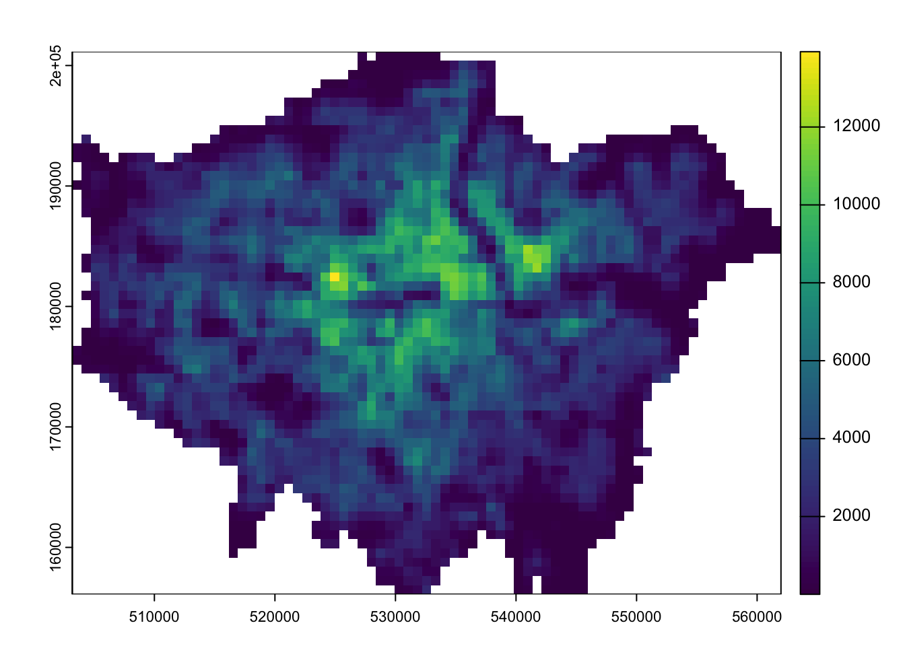

So far, we have exclusively focused on the use of vector and tabular data. However, depending on the nature of your research problem, you may also encounter raster data. This week’s content introduces you to raster data, map algebra, and interpolation.
6.1 Lecture slides
You can download the slides of this week’s lecture here: [Link].
6.2 Reading list
Essential readings
Gimond, M. 2021. Intro to GIS and spatial analysis. Chapter 14: Spatial Interpolation. [Link]
Heris, M., Foks, N., Bagstad, K. 2020. A rasterized building footprint dataset for the United States. Scientific Data 7: 207. [Link]
Láng-Ritter, J., Keskinen, M., Tenkanen, H. 2025. Global gridded population datasets systematically underrepresent rural population. Nature Communications 16: 2170. [Link]
Suggested readings
Mellander, C., Lobo, J., Stolarick, K. et al. 2015. Night-time light data: A good proxy measure for economic activity? PLoS ONE 10(10): e0139779. [Link]
Park, G. and Franklin, R. 2023. The changing demography of hurricane at-risk areas in the United States (1970–2018). Population, Space and Place 29(6): e2683. [Link]
Thomson, D., Leasure, D., Bird, T. et al. 2022. How accurate are WorldPop-Global-Unconstrained gridded population data at the cell-level? A simulation analysis in urban Namibia. Plos ONE 17:7: e0271504. [Link]
6.3 Population change in London
For the first part of this week’s practical material we will be using raster datasets from WorldPop. These population surfaces are estimates of counts of people, displayed within a regular grid raster of a spatial resolution of up to 100m. These datasets can be used to explore, for example, changes in the demographic profiles or area deprivation at small spatial scales.
The key difference between vector and raster models lies in their structure. Vectors are made up of points, lines, and polygons. In contrast, raster data consists of pixels (or grid cells), similar to an image. Each cell holds a single value representing a geographic phenomenon, such as population density at that location. Common raster data types include remote sensing imagery, such as satellite or LIDAR data.
Go to Population Count -> Unconstrained individual countries 2000-2020 (1km resolution).
Type United Kingdom in the search bar.
Download the GeoTIFF files for 2010 and 2020: gbr_ppp_2010_1km_Aggregated and gbr_ppp_2020_1km_Aggregated.
Save the files to your computer in your data folder.
A GeoTIFF is a type of raster file format that embeds geographic information, enabling the image to be georeferenced to specific real-world coordinates. It includes metadata like projection, coordinate system, and geographic extent, making it compatible with GIS software for spatial analysis.
To focus the analysis on London, we need to clip our dataset to the boundaries of the city. For this, we will use the London Borough boundaries, which can be downloaded from the link below. Be sure to save the files in the data folder within your data directory.
You may have to install some of these libraries if you have not used these before.
6.3.1 Map algebra
We will be using some simple map algebra to look at population change in London between 2010 and 2020. We can load the individual GeoTiff files that we downloaded into R and reproject them into British National Grid using the terra library.
Carefully examine each dataframe to understand its structure and the information it contains:
R code
# inspect 2010 datahead(pop2010)
gbr_ppp_2010_1km_Aggregated
1 NA
2 NA
3 NA
4 NA
5 NA
6 NA
# inspect 2020 datahead(pop2020)
gbr_ppp_2020_1km_Aggregated
1 NA
2 NA
3 NA
4 NA
5 NA
6 NA
A raster file is always rectangular, with areas lacking data stored as NA. For our population data, this means any pixels outside the land borders of Great Britain will have by definition an NA value.
You can further inspect the results using the View() function.
We can also plot the raster files for visual inspection:
R code
# plot 2010plot(pop2010)
Figure 1: WorldPop 2010 population estimates for the United Kingdom.
R code
# plot 2020plot(pop2020)
Figure 2: WorldPop 2020 population estimates for the United Kingdom.
You will notice that while the maps appear similar, the legend indicates a significant increase in values over the decade from 2010 to 2021, with the maximum rising from approximately 12,000 people per cell to over 14,000.
Now that we have our raster data loaded, we will focus on reducing it to display only the extent of London. We will use the London borough GeoPackage
The terra package does not accept sf objects, so after loading the London borough boundaries, we need to convert the file into a SpatRaster or SpatVector.
R code
# load data, to spatvectorborough <-st_read("data/spatial/London-Boroughs.gpkg") |>vect()
Reading layer `london_boroughs' from data source
`/Users/justinvandijk/Library/CloudStorage/Dropbox/UCL/Web/jtvandijk.github.io/GEOG0030/data/spatial/London-Boroughs.gpkg'
using driver `GPKG'
Simple feature collection with 33 features and 7 fields
Geometry type: POLYGON
Dimension: XY
Bounding box: xmin: 503568.2 ymin: 155850.8 xmax: 561957.5 ymax: 200933.9
Projected CRS: OSGB36 / British National Grid
# crop to extentpop2010_london <-crop(pop2010, borough)pop2020_london <-crop(pop2020, borough)# mask to boundariespop2010_london <-mask(pop2010_london, borough)pop2020_london <-mask(pop2020_london, borough)
We should now have the raster cells that fall within the boundaries of London:
R code
# inspectplot(pop2010_london)
Figure 3: WorldPop 2010 population estimates for London.
R code
# inspectplot(pop2020_london)

Figure 4: WorldPop 2020 population estimates for London.
Now we have our two London population rasters, we can calculate population change between the two time periods by subtracting our 2010 population raster from our 2020 population raster:
To further analyse our population change raster, we can create a smoothed version of the lonpop_change raster using the focal() function. This function generates a raster that calculates the average (mean) value of the nearest neighbours for each cell.
R code
# smoothlonpop_smooth <-focal(lonpop_change, w =matrix(1, 3, 3), fun = mean)# inspectplot(lonpop_change)
Figure 6: Smoothed version of population change in London 2010-2020.
The differences may not be immediately apparent, but if you subtract the smoothed raster from the original raster, you will clearly see that changes have occurred.
Figure 7: Difference smoothed population change with original population change raster.
We can also use zonal functions to better represent population change by aggregating the data to coarser resolutions. For example, resizing the raster’s spatial resolution to contain larger grid cells simplifies the data, making broader trends more visible. However,it may also end up obfuscating more local patterns.
We can resize a raster using the aggregate() function, setting the factor parameter to the scale of resampling desired (e.g. doubling both the width and height of a cell). The function parameter determines how to aggregate the data.
R code
# aggregatelonpop_agg <-aggregate(lonpop_change, fact =2, fun = mean)# inspectplot(lonpop_agg)
Figure 8: Aggregated cell values.
We can also aggregate raster cells to vector geographies. For example, we can aggregate the WorldPop gridded population estimates to the London borough boundaries:
Figure 9: Absolute population change in London boroughs 2010-2020.
You can further inspect the results using the View() function.
We now have a vector dataset, which allows us to perform many of the analyses we have explored in previous weeks.
Calculating population change, particularly over decades as we have done, can be challenging due to changes in administrative boundaries. Using raster data offers a helpful workaround, provided the rasters are of consistent size and extent.
6.4 Air pollution in London
In the second part of this week’s practical, we will explore various methods of spatial data interpolation, focusing on air pollution in London using data from Londonair. We will specifically look at Nitrogen Dioxide (NO2) measurements.
Londonair is the website of the London Air Quality Network (LAQN), which provides air pollution data for London and southeast England through the Environmental Research Group at Imperial College This data is publicly available and can be accessed directly using the openair R package, without needing to download files.
Spatial interpolation predicts a phenomenon at unmeasured locations. It is often used when we want to estimate a variable across space, particularly in areas with sparse or no data.
R code
# get list of all measurement sitessite_meta <-importMeta(source ="kcl", all =TRUE, year =2023:2023)# download all data pertaining to these sitespollution <-importKCL(site =c(site_meta$code), year =2023:2023, pollutant ="no2",meta =TRUE)
Not all measurements sites collect data on NO2 so it is normal to get some 404 Not Found warnings.
This code may take some time to run, as it will attempt to download data from all air measurement sites for an entire year, with many measurements taken hourly. If you experience too many errors or if it is taking too long, you can download a copy of the data here: [Download]. Once downloaded, place the zip file in your data folder. The file is large, so you can leave it unzipped.
Let us start by loading and inspecting the data:
R code
# load from zip if downloaded through the linkpollution <-read_csv("data/attributes/London-NO2-2023.zip")
Multiple files in zip: reading 'London-Pollution-2023.csv'
Rows: 1615976 Columns: 8
── Column specification ────────────────────────────────────────────────────────
Delimiter: ","
chr (4): site, code, source, site_type
dbl (3): no2, latitude, longitude
dttm (1): date
ℹ Use `spec()` to retrieve the full column specification for this data.
ℹ Specify the column types or set `show_col_types = FALSE` to quiet this message.
# inspecthead(pollution)
# A tibble: 6 × 8
date no2 site code source latitude longitude site_type
<dttm> <dbl> <chr> <chr> <chr> <dbl> <dbl> <chr>
1 2023-01-01 00:00:00 NA City of L… CTA kcl 51.5 -0.0921 Roadside
2 2023-01-01 01:00:00 NA City of L… CTA kcl 51.5 -0.0921 Roadside
3 2023-01-01 02:00:00 NA City of L… CTA kcl 51.5 -0.0921 Roadside
4 2023-01-01 03:00:00 NA City of L… CTA kcl 51.5 -0.0921 Roadside
5 2023-01-01 04:00:00 NA City of L… CTA kcl 51.5 -0.0921 Roadside
6 2023-01-01 05:00:00 NA City of L… CTA kcl 51.5 -0.0921 Roadside
In the first five rows, we can see data from the same site, with the date field showing an observation for every hour. Given there are 24 hours in a day, 365 days in a year, and data from hundreds of sites, it is no surprise that the dataset is so large. To make the dataset more manageable, let us summarise the values by site.
R code
# mean site valuespollution_avg <- pollution |>filter(!is.na(latitude) &!is.na(longitude) &!is.na(no2)) |>group_by(code, latitude, longitude) |>summarise(no2 =mean(no2))
`summarise()` has grouped output by 'code', 'latitude'. You can override using
the `.groups` argument.
We now have 177 measurement sites with their corresponding latitudes, longitudes, and average NO2 values. Let us have a look at the spatial distribution of these measurement sites.
# load boroughs for backgroundborough <-st_read("data/spatial/London-Boroughs.gpkg") |>st_union()
Reading layer `london_boroughs' from data source
`/Users/justinvandijk/Library/CloudStorage/Dropbox/UCL/Web/jtvandijk.github.io/GEOG0030/data/spatial/London-Boroughs.gpkg'
using driver `GPKG'
Simple feature collection with 33 features and 7 fields
Geometry type: POLYGON
Dimension: XY
Bounding box: xmin: 503568.2 ymin: 155850.8 xmax: 561957.5 ymax: 200933.9
Projected CRS: OSGB36 / British National Grid
# create a point spatial dataframemeasurement_sites <- pollution_avg |>st_as_sf(coords =c("longitude", "latitude"), crs =4326) |>st_transform(27700)# clip measurement sites to london boundariesmeasurement_sites <- measurement_sites |>st_intersection(borough)
Warning: attribute variables are assumed to be spatially constant throughout
all geometries
Figure 11: Proportional symbol map of average KCL NO2 measurement in London.
Figure 11 shows heterogeneity in average NO2 measurements across London, both in terms of coverage and NO2 levels. To make reasonable assumptions about NO2 levels in areas without measurements, we can interpolate the missing values.
6.4.1 Voronoi tessellation
A straightforward method for interpolating values across space is to create a Voronoi tessellation polygons. These polygons define the boundaries of areas closest to each unique point, meaning that each point in the dataset has a corresponding polygon.
In addition to Voronoi tessellation, you may encounter the term Thiessen polygons. These terms are often used interchangeably to describe the geometry created from point data.
R code
# functionst_voronoi_points <-function(points) {# to multipoint g =st_combine(st_geometry(points))# to voronoi v =st_voronoi(g) v =st_collection_extract(v)# returnreturn(v[unlist(st_intersects(points, v))])}# voronoi tessellationmeasurement_sites_voronoi <-st_voronoi_points(measurement_sites)# replace point geometry with polygon geometrymeasurement_sites_tesselation <- measurement_sites |>st_set_geometry(measurement_sites_voronoi) |>st_intersection(borough)
Warning: attribute variables are assumed to be spatially constant throughout
all geometries
Do not worry about fully understanding the code behind the function; just know that it takes a point spatial data frame as input and produces a tessellated spatial data frame as output.
You can further inspect the results using the View() function.
We can now visualise the results of the interpolation:
Figure 12: Interpolation of average NO2 measurements in London using a Voronoi tessellation.
6.4.2 Inverse Distance Weighting
A more sophisticated method for interpolating point data is Inverse Distance Weighting (IDW). IDW converts numerical point data into a continuous surface, allowing for visualisation of how the data is distributed across space. This technique estimates values at each location by calculating a weighted average from nearby points, with the weights inversely related to their distances.
The distance weighting is done by a power function: the larger the power coefficient, the stronger the weight of nearby point. The output is most commonly represented as a raster surface.
We will start by generating an empty grid to store the predicted values before running the IDW.
Warning: attribute variables are assumed to be spatially constant throughout
all geometries
The IDW interpolation may take some time to run because it involves calculating the weighted average of nearby points for each location on the grid. In this case, idp = 2 specifies a quadratic decay, meaning the influence of a point decreases with the square of the distance.
Again, we can map the results for visual inspection.
The values of the IDW output are stored in the raster grid as var1.pred.
Figure 13: Interpolation of average NO2 measurements in London using Inverse Distance Weighting.
We have set the output cell size to 1000x1000 metres. While a smaller cell size can yield a smoother IDW output, it may introduce uncertainty due to the limited number of data points available for interpolation. Moreover, reducing the cell size will exponentially increase processing time.
6.5 Assignment
Having run through all the steps during the tutorial, we can conduct some more granular analysis of the NO2 measurements. For example, instead of examining the annual average measurements, we could compare data across different months. Please try the following tasks:
Create monthly averages for the pollution data.
For both June and December, generate a dataframe containing the London monitoring sites along with their average NO₂ readings for these months.
Perform Inverse Distance Weighting (IDW) interpolation for the data from both months.
Combine the results to assess the differences between these months.
6.6 Before you leave
This week, we have explored raster datasets and how to manage and process them using the terra library. While you will typically encounter vector data, particularly in relation to government statistics and administrative boundaries, there are also many use cases where raster data may be encountered. With that being said: that is it for this week!